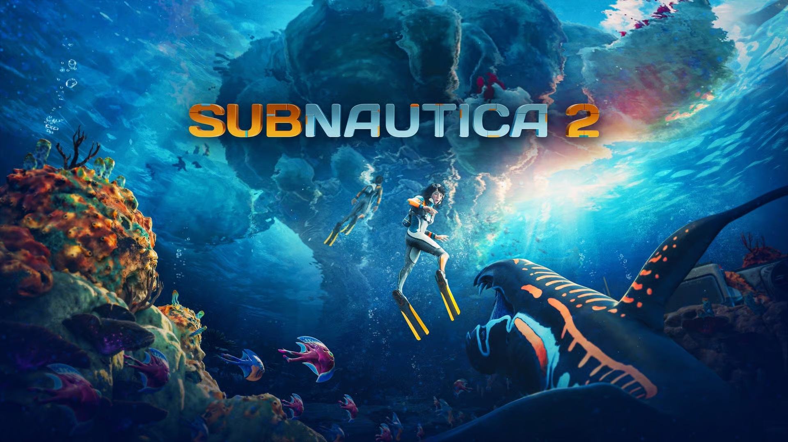
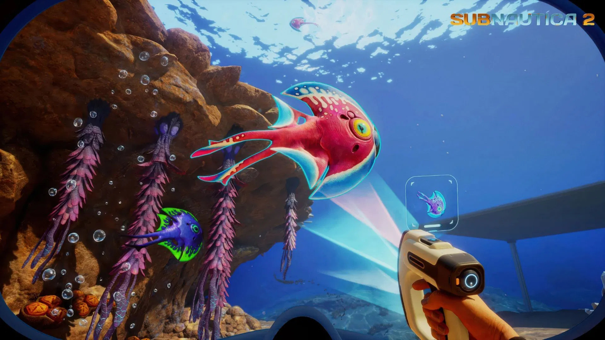

Sinopsis

Subnautica 2 es un juego que nos lleva a la precuela de nuestra historia favorita. Inicialmente Alterra habia planeado
una expedición a Zicada, pero no todo sale como se planeó y acabamos en otro planeta distinto... Proteo.
En esta historia conocerás los peligros y cosas fascinantes en este nuevo mundo. Destaparás la historia para descurbrir que
ha ocurrido en este planeta mientras estabas inconsciente y decidirás el destino del mundo, salvarás al arbol del mundo? ¿O decidirás
destruirlo para que futuras especies no caigan frente a el?
Introduccion

Subnautica 2 es la nueva entrega de la saga de supervivencia submarina desarrollada por Unknown World Entertainment.
El juego nos lleva a un nuevo planeta oceánico lleno de criaturas desconocidas, biomas alienígenas y misterios ocultos bajo las profundidades.
A diferencia de los títulos anteriores, esta entrega introduce cooperativo de hasta 4 jugadores, permitiendo explorar el océano junto a amigos
mientras construyes bases, fabricas herramientas y sobrevives a enormes leviatanes.
Con gráficos creados en Unreal Engine 5, Subnautica 2 busca ofrecer una experiencia
más inmersiva, peligrosa y ambiciosa que nunca, manteniendo la exploración, el miedo
a las profundidades y la sensación de descubrimiento que hicieron famosa a la saga.